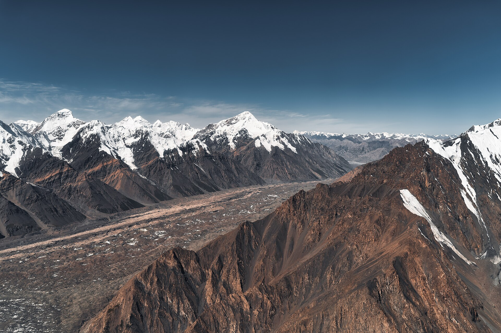

Кыргызстан объявил план адаптации к климату стоимостью 850 млн долларов
Национальный план, рассчитанный до 2035 года, вынесен на общественное обсуждение. Согласно документу, с начала XXI века площадь ледников в стране сократилась на 16–17 процентов, а период максимального стока рек сместился на 50 дней раньше.

Министерство природных ресурсов Кыргызстана подготовило национальный план адаптации к климату, рассчитанный до 2035 года, и вынесло его на общественное обсуждение. Документ обосновывает это тем, что сокращение ледников и изменение речного стока угрожают орошению, сельскому хозяйству и гидроэнергетике.
Расходы и финансирование
Предварительные расходы на реализацию плана в 2026–2035 годах оценены в 74,5 млрд сомов — примерно 850 млн долларов. Более половины средств ожидается получить от международных климатических фондов и государств-партнёров.
В настоящее время Зелёный климатический фонд поддерживает в Кыргызстане семь проектов; их общая стоимость составляет примерно 149 млн долларов. Среди проектов — инициативы по водной инфраструктуре и повышению климатической устойчивости сельского хозяйства.
В цифрах
- Срок плана: 2026–2035 годы
- Предварительные расходы: 74,5 млрд сомов (~850 млн долларов)
- Ожидаемая доля из международных источников: более половины
- Сокращение площади ледников (с 2000 года): 16–17%
- Рост температуры (1981–2020): ~0,28 °C за десятилетие
- Смещение пика речного стока: ~на 50 дней раньше
- Потери при транспортировке воды: 26%
- Проекты Зелёного климатического фонда: 7, ~149 млн долларов
Климатические показатели
Согласно документу, в 1981–2020 годах средняя температура в Кыргызстане росла примерно на 0,28 градуса за десятилетие. С начала XXI века площадь, покрытая ледниками, сократилась на 16–17 процентов.
На крупных реках период максимального стока сместился примерно на 50 дней раньше по сравнению с историческими показателями. Это означает, что таяние снега и льда начинается раньше; в результате вода поступает весной, а не в летние месяцы, когда орошение наиболее необходимо.
Меры, предусмотренные планом
В документе предусмотрены составление карты климатических рисков, усиление системы прогнозирования засух и наводнений, обновление сети мониторинга и модернизация систем орошения.
Основная цель обновления системы орошения — сокращение потерь в процессе транспортировки воды. Сейчас эти потери составляют 26 процентов.
В число приоритетных направлений включены водная безопасность, здоровье населения, продовольственные системы и инфраструктура. В плане также предусмотрено совершенствование систем оповещения о селях и наводнениях.
Экономические последствия
По оценке Всемирного банка, без принятия мер адаптации Кыргызстан к 2040 году может потерять 2–3 процента валового внутреннего продукта. Отмечено, что к середине века 24 процента потребности в поливной воде может остаться неудовлетворённой.
Горные реки питают гидроэлектростанции, вырабатывающие основную часть электроэнергии страны. То есть изменение водного режима одновременно влияет и на сельское хозяйство, и на энергосистему.
Региональное значение
Реки, берущие начало в горах Тянь-Шаня в Кыргызстане, питают всю водную систему Центральной Азии. Река Нарын считается основным притоком Сырдарьи; Сырдарья же участвует в орошении территорий Узбекистана и Казахстана.
Поэтому меры адаптации в Кыргызстане имеют практическое значение и для соседних государств. Переговоры между государствами региона по водно-энергетическим вопросам ведутся уже десятилетия.
1 сентября на саммите ШОС в Бишкеке президент Узбекистана предложил новый механизм координации по продовольственной, водной и энергетической безопасности, а также программу водной и энергетической эффективности до 2035 года.
Контекст
Кыргызстан ранее первым в Центральной Азии принял рамочный закон по климату. Национальный план адаптации готовится при поддержке Программы развития ООН.
Почему важны ледники
Ледники горных хребтов Тянь-Шаня и Памира выполняют для Центральной Азии роль естественного водохранилища: зимой они накапливаются в виде снега и льда, а летом тают и наполняют реки. Именно этот цикл считается основой системы орошения в регионе.
Сокращение площади ледников в краткосрочной перспективе может увеличить сток — таяние ускоряется. В долгосрочной же перспективе по мере исчерпания запаса летний сток снижается. В плане отмечено, что даже без дополнительного потепления к середине века объём ледников может сократиться ещё более чем на треть.
Река Нарын, берущая начало в Кыргызстане, считается основным притоком Сырдарьи. Сырдарья участвует в орошении территорий Узбекистана и Казахстана и впадает в бассейн Аральского моря.
Гидроэнергетика
Основная часть электроэнергии Кыргызстана вырабатывается на гидроэлектростанциях. Крупнейшее сооружение — Токтогульский гидроузел на реке Нарын, водохранилище которого считается одним из самых больших в регионе.
Изменение водного режима влияет одновременно на две системы: когда зимой вода расходуется на выработку электроэнергии, государства нижнего течения весной получают избыточную воду, а летом запас для орошения сокращается. Это основная тема водно-энергетических переговоров в регионе.
Источники финансирования
Более половины расходов плана в 74,5 млрд сомов ожидается от международных климатических фондов и государств-партнёров. Зелёный климатический фонд в настоящее время поддерживает в Кыргызстане семь проектов общей стоимостью примерно 149 млн долларов.
Среди этих проектов — инициативы по водной инфраструктуре и повышению климатической устойчивости сельского хозяйства. Точное распределение остальных источников средств и доли внутреннего бюджета не обнародовано.
Статус документа
План пока находится на стадии проекта: он вынесен на общественное обсуждение. Документ подготовлен Министерством природных ресурсов при поддержке Программы развития ООН.
Кыргызстан ранее первым в Центральной Азии принял рамочный закон по климату. Дата утверждения национального плана адаптации не объявлена.
Проблема потерь воды
В плане модернизация системы орошения выделена как отдельное направление. Сейчас потери в процессе транспортировки воды составляют 26 процентов — то есть каждый четвёртый литр воды не доходит до поля.
Основная причина потерь — подача воды по открытым земляным каналам. В таких каналах вода впитывается и испаряется. В качестве решения указываются бетонирование каналов, переход на трубопроводные сети и внедрение технологий капельного орошения.
В плане также отмечено, что к середине века 24 процента потребности в поливной воде может остаться неудовлетворённой.
Системы оповещения
В документе предусмотрены составление карты климатических рисков, усиление системы прогнозирования засух и наводнений, а также обновление сети мониторинга.
Для Кыргызстана особую опасность представляют сели и внезапный прорыв горных озёр: озёра, образовавшиеся в результате таяния ледников, накапливают воду, а затем при разрушении плотины селевой поток может обрушиться на сёла в нижнем течении.
В число приоритетных направлений включены водная безопасность, здоровье населения, продовольственные системы и инфраструктура.
Региональное сотрудничество
Меры адаптации в Кыргызстане имеют практическое значение и для соседних государств. Страна считается экспортёром водных ресурсов: значительная часть стока, формирующегося на её территории, идёт на поля Узбекистана и Казахстана.
Переговоры между государствами региона по водно-энергетическим вопросам ведутся уже десятилетия. Основное противоречие — между потребностью государств нижнего течения в летнем орошении и потребностью государств верхнего течения в выработке электроэнергии зимой.
1 сентября на саммите ШОС в Бишкеке президент Узбекистана предложил новый механизм координации по продовольственной, водной и энергетической безопасности, а также программу технологического сотрудничества по водной и энергетической эффективности до 2035 года.
План пока находится на стадии проекта: ожидается, что после завершения общественного обсуждения он будет утверждён правительством. Дата утверждения не объявлена.
Лето 2026 года в Центральной Азии выдалось жарким: по данным Узгидромета, в Узбекистане это лето стало вторым самым жарким за историю наблюдений.